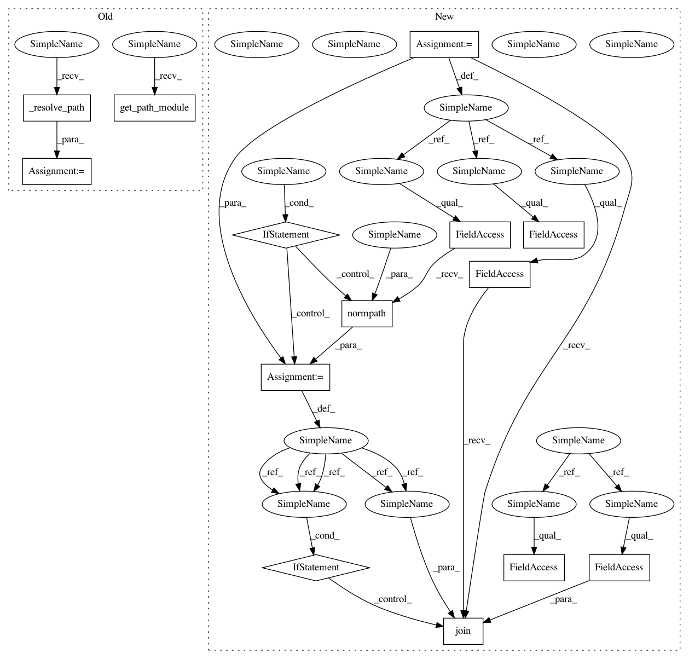

fce215310e853dd649d5aef41e4772f707866df7,mlflow/store/local_artifact_repo.py,LocalArtifactRepository,log_artifacts,#LocalArtifactRepository#Any#Any#,24
Before Change
def log_artifacts(self, local_dir, artifact_path=None):
verify_artifact_path(artifact_path)
artifact_dir = self._resolve_path(artifact_path)
if not self.get_path_module().exists(artifact_dir):
mkdir(artifact_dir)
dir_util.copy_tree(src=local_dir, dst=artifact_dir)
After Change
mkdir(artifact_dir)
shutil.copy(local_file, artifact_dir)
def log_artifacts(self, local_dir, artifact_path=None):
verify_artifact_path(artifact_path)
// NOTE: The artifact_path is expected to be in posix format.
// Posix paths work fine on windows but just in case we normalize it here.
if artifact_path:
artifact_path = os.path.normpath(artifact_path)
artifact_dir = os.path.join(self.artifact_dir, artifact_path) if artifact_path else \
self.artifact_dir
if not os.path.exists(artifact_dir):
mkdir(artifact_dir)
dir_util.copy_tree(src=local_dir, dst=artifact_dir)
In pattern: SUPERPATTERN
Frequency: 3
Non-data size: 14
Instances
Project Name: mlflow/mlflow
Commit Name: fce215310e853dd649d5aef41e4772f707866df7
Time: 2019-05-06
Author: 33237569+tomasatdatabricks@users.noreply.github.com
File Name: mlflow/store/local_artifact_repo.py
Class Name: LocalArtifactRepository
Method Name: log_artifacts
Project Name: mlflow/mlflow
Commit Name: fce215310e853dd649d5aef41e4772f707866df7
Time: 2019-05-06
Author: 33237569+tomasatdatabricks@users.noreply.github.com
File Name: mlflow/store/local_artifact_repo.py
Class Name: LocalArtifactRepository
Method Name: list_artifacts
Project Name: mlflow/mlflow
Commit Name: fce215310e853dd649d5aef41e4772f707866df7
Time: 2019-05-06
Author: 33237569+tomasatdatabricks@users.noreply.github.com
File Name: mlflow/store/local_artifact_repo.py
Class Name: LocalArtifactRepository
Method Name: log_artifact
Project Name: mlflow/mlflow
Commit Name: fce215310e853dd649d5aef41e4772f707866df7
Time: 2019-05-06
Author: 33237569+tomasatdatabricks@users.noreply.github.com
File Name: mlflow/store/local_artifact_repo.py
Class Name: LocalArtifactRepository
Method Name: log_artifacts